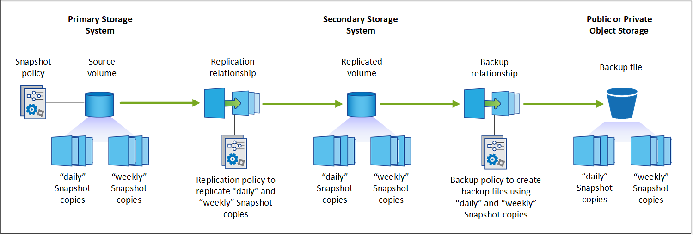

Amazon Web Services
Amazon Web Services
 Google Cloud
Google Cloud
 Microsoft Azure
Microsoft Azure
 Richiedi modifiche alla documentazione
Richiedi modifiche alla documentazione Modifica questa pagina
Modifica questa pagina Scopri come collaborare
Scopri come collaborarePianifica il tuo percorso di protezione
Collaboratori
Il servizio di backup e ripristino BlueXP consente di creare fino a tre copie dei volumi di origine per proteggere i dati. Quando si attiva questo servizio sui volumi, è possibile selezionare numerose opzioni, pertanto è necessario rivedere le scelte in modo da essere pronti.
Esamineremo le seguenti opzioni:
-
Quali funzionalità di protezione utilizzerai: Copie Snapshot, volumi replicati e/o backup nel cloud
-
Quale architettura di backup utilizzerai: Un backup a cascata o fan-out dei tuoi volumi
-
Utilizza i criteri di backup predefiniti o crea criteri personalizzati prima di iniziare
-
Vuoi che il servizio crei i bucket cloud per te o vuoi creare i container di storage a oggetti prima di iniziare
-
Quale modalità di implementazione di BlueXP Connector utilizzi (modalità standard, limitata o privata)
Quali funzioni di protezione utilizzerai
Prima di selezionare le funzioni da utilizzare, ecco una rapida spiegazione delle funzioni di ciascuna funzione e del tipo di protezione fornito.
| Tipo di backup | Descrizione |
|---|---|
Snapshot |
Crea un’immagine point-in-time di sola lettura di un volume all’interno del volume di origine come copia Snapshot. È possibile utilizzare la copia Snapshot per ripristinare singoli file o l’intero contenuto di un volume. |
Replica |
Crea una copia secondaria dei tuoi dati su un altro sistema storage ONTAP e aggiorna continuamente i dati secondari. I tuoi dati vengono mantenuti aggiornati e rimangono disponibili ogni volta che ne hai bisogno. |
Backup nel cloud |
Crea backup dei tuoi dati nel cloud per motivi di protezione e archiviazione a lungo termine. Se necessario, è possibile ripristinare un volume, una cartella o singoli file dal backup nello stesso ambiente di lavoro o in un ambiente diverso. |
Gli snapshot sono la base di tutti i metodi di backup e sono necessari per utilizzare il servizio di backup e ripristino. Una copia Snapshot è un’immagine point-in-time di sola lettura di un volume. L’immagine consuma uno spazio di storage minimo e comporta un overhead delle performance trascurabile, in quanto registra solo le modifiche apportate ai file dall’ultima copia Snapshot. La copia Snapshot creata sul volume viene utilizzata per mantenere il volume replicato e il file di backup sincronizzati con le modifiche apportate al volume di origine, come mostrato nella figura.

È possibile scegliere di creare volumi replicati su un altro sistema storage ONTAP e file di backup nel cloud. In alternativa, puoi scegliere di creare volumi replicati o file di backup.
In sintesi, questi sono i flussi di protezione validi che è possibile creare per i volumi nel proprio ambiente di lavoro ONTAP:
-
Volume di origine → copia Snapshot → volume replicato → file di backup
-
Volume di origine → copia Snapshot → file di backup
-
Volume di origine → copia Snapshot → volume replicato

|
La creazione iniziale di un volume replicato o di un file di backup include una copia completa dei dati di origine, ovvero un trasferimento di riferimento. I trasferimenti successivi contengono solo copie differenziali dei dati di origine (Snapshot). |
Confronto tra i diversi metodi di backup
La tabella seguente mostra un confronto generalizzato dei tre metodi di backup. Sebbene lo spazio di storage a oggetti sia in genere meno costoso dello storage su disco on-premise, se pensi di poter ripristinare frequentemente i dati dal cloud, le tariffe di uscita dai cloud provider possono ridurre alcuni dei tuoi risparmi. Sarà necessario identificare la frequenza con cui è necessario ripristinare i dati dai file di backup nel cloud.
Oltre a questi criteri, lo storage cloud offre opzioni di sicurezza aggiuntive se si utilizza la funzionalità DataLock e ransomware Protection, oltre a risparmi aggiuntivi selezionando classi di storage di archiviazione per i file di backup meno recenti. "Scopri di più su DataLock e la protezione ransomware" e. "impostazioni dello storage di archiviazione".
| Tipo di backup | Velocità di backup | Costi di backup | Velocità di ripristino | Costi di ripristino |
|---|---|---|---|---|
Istantanea |
Alto |
Basso (spazio su disco) |
Alto |
Basso |
Replication |
Medio |
Media (spazio su disco) |
Medio |
Medio (rete) |
Backup cloud |
Basso |
Basso (spazio oggetto) |
Basso |
Elevato (tariffe provider) |
Quale architettura di backup utilizzerai
Quando si creano volumi replicati e file di backup, è possibile scegliere un’architettura fan-out o a cascata per eseguire il backup dei volumi.
Un’architettura fan-out trasferisce la copia Snapshot in modo indipendente sia al sistema storage di destinazione che all’oggetto di backup nel cloud.

Un’architettura Cascade trasferisce prima la copia Snapshot al sistema di storage di destinazione, quindi il sistema trasferisce la copia all’oggetto di backup nel cloud.

Confronto delle diverse scelte di architettura
Questa tabella fornisce un confronto tra le architetture fan-out e cascata.
| Fan-out | Cascata |
|---|---|
Piccolo impatto sulle performance del sistema di origine, perché invia copie Snapshot a 2 sistemi distinti |
Meno effetti sulle performance del sistema storage di origine, in quanto invia la copia Snapshot una sola volta |
È più semplice da configurare perché tutte le policy, le reti e le configurazioni ONTAP vengono eseguite sul sistema di origine |
Richiede alcune configurazioni di rete e ONTAP anche dal sistema secondario. |
Utilizza i criteri di backup predefiniti per snapshot, repliche e backup
È possibile utilizzare i criteri predefiniti forniti da NetApp per creare i backup oppure creare criteri personalizzati. Quando si utilizza la procedura guidata di attivazione per attivare il servizio di backup e ripristino per i volumi, è possibile scegliere tra i criteri predefiniti e gli altri criteri già presenti nell’ambiente di lavoro (sistema Cloud Volumes ONTAP o ONTAP on-premise). Se si desidera utilizzare un criterio diverso da quelli esistenti, è necessario crearlo prima di avviare l’attivazione guidata.
-
La policy di snapshot predefinita crea copie Snapshot orarie, giornaliere e settimanali, conservando 6 copie Snapshot orarie, 2 giornaliere e 2 copie Snapshot settimanali.
-
La policy di replica predefinita replica le copie Snapshot giornaliere e settimanali, conservando 7 copie Snapshot giornaliere e 52 copie Snapshot settimanali.
-
La policy di backup predefinita replica le copie Snapshot giornaliere e settimanali, conservando 7 copie Snapshot giornaliere e 52 copie Snapshot settimanali.
Se si creano criteri personalizzati per la replica o il backup, le etichette dei criteri (ad esempio, "giornaliero" o "settimanale") devono corrispondere alle etichette presenti nelle policy Snapshot, altrimenti i volumi replicati e i file di backup non verranno creati. È possibile creare policy personalizzate utilizzando Gestione di sistema o l’interfaccia della riga di comando di ONTAP.
"Creare un criterio di snapshot utilizzando System Manager"
"Creare un criterio di snapshot utilizzando l’interfaccia utente di ONTAP"
"Creare un criterio di replica utilizzando System Manager"
"Creare un criterio di replica utilizzando l’interfaccia utente di ONTAP"
"Creare una policy di backup utilizzando System Manager"
"Creare un criterio di backup utilizzando l’interfaccia utente di ONTAP"
Nota: quando si utilizza System Manager, selezionare Asynchronous come tipo di policy per le policy di replica e selezionare Asynchronous e Backup nel cloud per le policy di backup su oggetti.
È possibile creare criteri di backup su storage a oggetti nell’interfaccia utente di backup e ripristino di BlueXP. Vedere la sezione per "aggiunta di un nuovo criterio di backup" per ulteriori informazioni. È necessario creare policy di replica e snapshot utilizzando Gestione di sistema o l’interfaccia CLI di ONTAP.
Di seguito sono riportati alcuni comandi CLI di esempio di ONTAP che possono essere utili se si creano criteri personalizzati. Tenere presente che è necessario utilizzare il vserver admin (storage VM) come <vserver_name> in questi comandi.
| Descrizione policy | Comando |
|---|---|
Semplice policy Snapshot |
|
Backup semplice sul cloud |
|
Backup su cloud con DataLock e protezione ransomware |
|
Backup su cloud con storage di classe archivistica |
|
Replica semplice su un altro sistema storage |
|
|
|
Per le relazioni di backup su cloud è possibile utilizzare solo le policy del vault. |
Dove risiedono le policy?
I criteri di backup si trovano in posizioni diverse a seconda dell’architettura di backup che si intende utilizzare: Fan-out o Cascading. I criteri di replica e i criteri di backup non sono progettati allo stesso modo perché le repliche associano due sistemi storage ONTAP e il backup su oggetto utilizza un provider di storage come destinazione.
Le policy di Snapshot risiedono sempre nel sistema di storage primario.
I criteri di replica risiedono sempre nel sistema di storage secondario.
I criteri di backup su oggetto vengono creati nel sistema in cui risiede il volume di origine, ovvero il cluster principale per le configurazioni fan-out e il cluster secondario per le configurazioni a cascata.
Queste differenze sono indicate nella tabella.
| Architettura | Policy di Snapshot | Policy di replica | Policy di backup |
|---|---|---|---|
Fan-out |
Primario |
Secondario |
Primario |
Cascade |
Primario |
Secondario |
Secondario |
Pertanto, se si prevede di creare policy personalizzate quando si utilizza l’architettura a cascata, sarà necessario creare la replica e il backup su policy a oggetti sul sistema secondario in cui verranno creati i volumi replicati. Se si prevede di creare policy personalizzate quando si utilizza l’architettura fan-out, sarà necessario creare policy di replica sul sistema secondario in cui verranno creati i volumi replicati e eseguire il backup su policy a oggetti sul sistema primario.
Se si utilizzano i criteri predefiniti presenti in tutti i sistemi ONTAP, tutti i criteri sono impostati.
Si desidera creare un container di storage a oggetti personalizzato
Per impostazione predefinita, quando si creano file di backup nello storage a oggetti per un ambiente di lavoro, il servizio di backup e recovery crea il container (bucket o account di storage) per i file di backup nell’account di storage a oggetti configurato. Per impostazione predefinita, il bucket AWS o GCP è denominato "netapp-backup-<uuid>". L’account di storage Azure Blob è denominato "<uuid>".
Se si desidera utilizzare un determinato prefisso o assegnare proprietà speciali, è possibile creare il container direttamente nell’account del provider di oggetti. Se si desidera creare un container personalizzato, è necessario crearlo prima di avviare l’attivazione guidata. Il container deve essere utilizzato esclusivamente per la memorizzazione dei file di backup dei volumi ONTAP e non può essere utilizzato per altri scopi. La procedura guidata di attivazione del backup rileva automaticamente i container forniti per l’account e le credenziali selezionati, in modo da poter selezionare quello che si desidera utilizzare.
Puoi creare il bucket da BlueXP o dal tuo cloud provider.
Nota: al momento non è possibile utilizzare i propri bucket S3 quando si creano backup nei sistemi StorageGRID.
Se si prevede di utilizzare un prefisso bucket diverso da "netapp-backup-xxxxxx", sarà necessario modificare le autorizzazioni S3 per il ruolo IAM del connettore. Per ulteriori informazioni, consultare gli argomenti relativi alla creazione di backup in AWS S3.
Impostazioni avanzate della benna
Se si prevede di spostare i file di backup meno recenti nello storage di archiviazione, o se si intende attivare la protezione DataLock e ransomware per bloccare i file di backup ed eseguirne la scansione per eventuali ransomware, è necessario creare il container con determinate impostazioni di configurazione:
-
Lo storage di archiviazione sui bucket è attualmente supportato nello storage AWS S3 quando si utilizza ONTAP 9.10.1 o software superiore sui cluster. Per impostazione predefinita, i backup iniziano nella classe di storage S3 Standard. Assicurarsi di creare il bucket con le regole del ciclo di vita appropriate:
-
Sposta gli oggetti nell’intero ambito del bucket in S3 Standard-IA dopo 30 giorni.
-
Spostare gli oggetti con il tag "smc_push_to_archive: True" in Glacier Flexible Retrieval (in precedenza S3 Glacier)
-
-
La protezione DataLock e ransomware è supportata nello storage AWS quando si utilizza software ONTAP 9.11.1 o superiore sui cluster e nello storage Azure quando si utilizza software ONTAP 9.12.1 o superiore.
-
Per AWS, è necessario attivare il blocco degli oggetti sul bucket utilizzando un periodo di conservazione di 30 giorni.
-
Per Azure, è necessario creare la classe di storage con il supporto dell’immutabilità a livello di versione.
-
Quale modalità di implementazione di BlueXP Connector si sta utilizzando
Se si utilizza già BlueXP per gestire lo storage, è già stato installato un connettore BlueXP. Se si prevede di utilizzare lo stesso connettore con il backup e ripristino di BlueXP, si è tutti impostati. Se è necessario utilizzare un connettore diverso, è necessario installarlo prima di iniziare l’implementazione del backup e ripristino.
BlueXP offre diverse modalità di implementazione che consentono di utilizzare BlueXP in modo da soddisfare i requisiti di sicurezza e di business. Standard mode sfrutta il layer BlueXP SaaS per fornire funzionalità complete, mentre restricted mode e private mode sono disponibili per le organizzazioni con restrizioni di connettività.
"Scopri di più sulle modalità di implementazione di BlueXP".
"Guarda questo video sulle modalità di implementazione di BlueXP".
Supporto per siti con connettività Internet completa
Quando il backup e ripristino BlueXP viene utilizzato in un sito con connettività Internet completa (nota anche come "modalità standard" o "modalità SaaS"), è possibile creare volumi replicati su qualsiasi sistema ONTAP o Cloud Volumes ONTAP on-premise gestito da BlueXP, inoltre, puoi creare file di backup sullo storage a oggetti in qualsiasi provider cloud supportato. "Consulta l’elenco completo delle destinazioni di backup supportate".
Consultare l’argomento relativo al backup del provider di servizi cloud in cui si prevede di creare file di backup per l’elenco delle posizioni dei connettori valide. Esistono alcune limitazioni per le quali il connettore deve essere installato manualmente su una macchina Linux o implementato in uno specifico cloud provider.
Supporto per siti con connettività Internet limitata
Il backup e ripristino BlueXP può essere utilizzato in un sito con connettività Internet limitata (nota anche come "modalità limitata") per eseguire il backup dei dati del volume. In questo caso, è necessario implementare BlueXP Connector nell’area limitata.
-
Puoi eseguire il backup dei dati dai sistemi Cloud Volumes ONTAP installati nelle aree commerciali di AWS su Amazon S3. Scopri come "Eseguire il backup dei dati Cloud Volumes ONTAP su Amazon S3".
Supporto per siti senza connessione a Internet
Il backup e il ripristino BlueXP possono essere utilizzati in un sito senza connettività Internet (noto anche come siti "privati" o "scuri") per eseguire il backup dei dati del volume. In questo caso, sarà necessario implementare BlueXP Connector su un host Linux nello stesso sito.
-
È possibile eseguire il backup dei dati dai sistemi ONTAP locali on-premise ai sistemi NetApp StorageGRID locali. Scopri come "Eseguire il backup dei dati ONTAP on-premise su StorageGRID" per ulteriori informazioni.